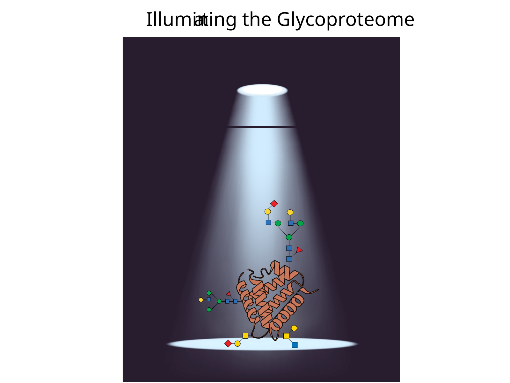
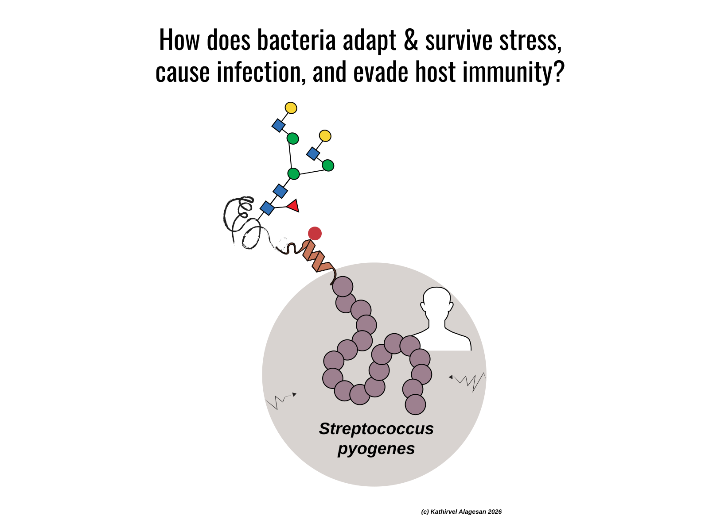
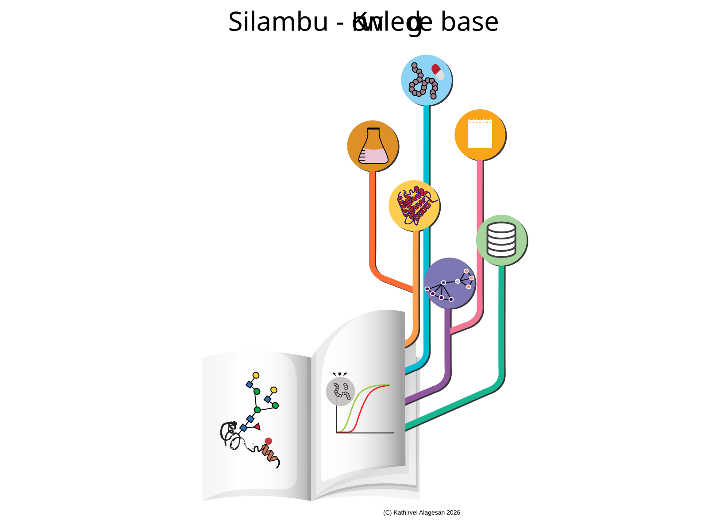

Independent Research Themes · Dr. Kathirvel Alagesan · MPUSP
Next-Generation Proteomic Technologies
To tackle the immense micro- and macro-heterogeneity of glycoproteins, we develop robust, high-throughput analytical methodologies. We are breaking traditional analytical norms to improve glycopeptide coverage and resolve complex isomeric glycan structures in clinical and biological samples.

Systems Glycobiology & Host-Pathogen Interactions
Bacteria reshape their proteomes to survive stress & infection. Our research investigates how protein glycosylation and post-translational remodeling govern microbial pathogenesis. By capturing dynamic proteome alterations, PTMs, and molecular interaction networks across both pathogen and host, we aim to uncover how major human pathogens, like Streptococcus pyogenes, exploit the host glycome to establish niche colonization and drive severe, invasive disease.

Advanced Proteome Informatics
(Glyco)Proteomics is a data-rich field, but extracting biological meaning requires sophisticated tools. We are building the SILAMBU modular ecosystem to seamlessly translate raw mass spectrometry data into structured biological knowledge. This framework emphasizes interactive data visualization, reproducible pipelines, and FAIR principles, culminating in the Proteomics Knowledgebase.

Selected Research Outputs
Full PubMed List →- Recombinant production platform for Group A Streptococcus glycoconjugate vaccines →
- Community evaluation of glycoproteomics informatics solutions reveals high-performance search strategies for serum glycopeptide analysis →
- High-throughput clinical glycomics for biomarker discovery →
- It is all about the solvent: on the importance of the mobile phase for ZIC-HILIC glycopeptide enrichment →